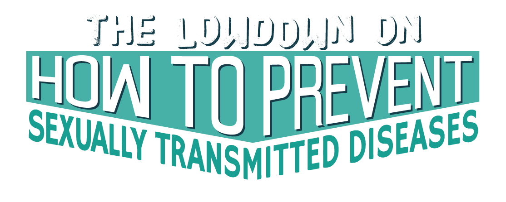
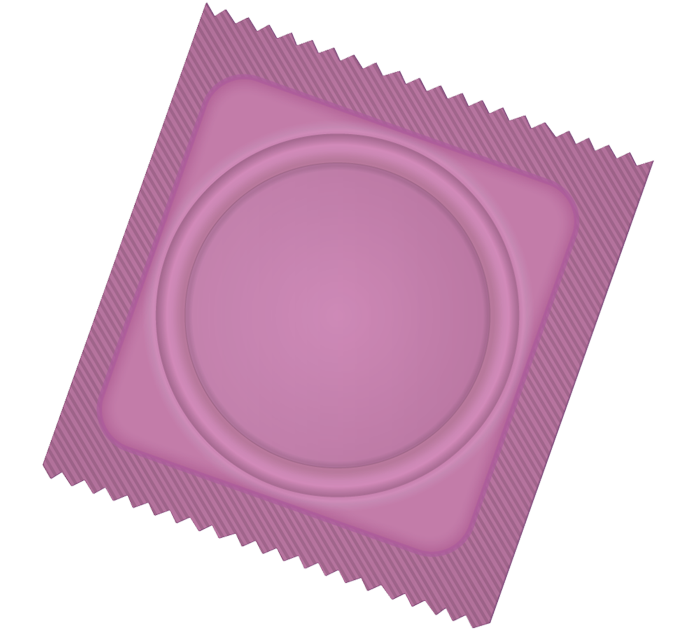
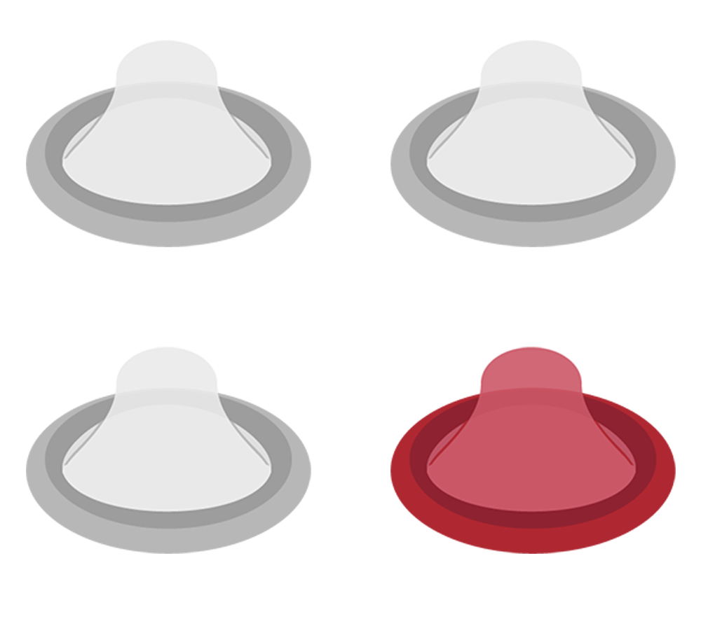

Every Day, there are an estimated
The Lowdown on How to Prevent Sexually Transmitted Diseases
Anyone who is sexually active can get an STD.
Some groups are more affected by STDs and their outcomes
The Good News
STDs ARE preventable. There are steps you can take to keep yourself and your partner(s) healthy.
Here’s How You Can Avoid
Giving or Getting an STD:
Practice Abstinence
The surest way to avoid STDs is to not have sex.
This means not having vaginal, oral, or anal sex.
Use Condoms
Using a condom correctly every time you have sex can help you avoid STDs.
Condoms lessen the risk of infection for all STDs. You still can get certain STDs, like herpes[1] or HPV[2], from contact with your partner's skin even when using a condom.

Most people say they used a condom the first time they ever had sex,[3] but when asked about the last 4 weeks, less than a quarter said they used a condom every time.[4]

Have Fewer Partners
Agree to only have sex with one person who agrees to only have sex with you.
Make sure you both get tested to know for sure that neither of you has an STD. This is one of the most reliable ways to avoid STDs.
Get Vaccinated
The most common STD can be prevented by a vaccine.
The HPV vaccine is safe[5], effective, and can help you avoid HPV-related health problems like genital warts and some cancers.[6]
Who should get the HPV vaccine?
If You Test Positive...
Getting an STD is not the end!
Many STDs are curable and all are treatable.
If either you or your partner is infected with an STD that can be cured[8], both of you need to start treatment immediately to avoid getting re-infected.
Want More Information?
Read CDC's STD Fact Sheets FamilyClinic 17 Facebook WhatsApp Us
References
- Genital Herpes - CDC.gov Fact Sheet
- Human Papillomavirus - CDC.gov Fact Sheet
- Condom use at first sex - CDC.gov National Survey of Family Growth
- Consistency of condom use - CDC.gov National Survey of Family Growth
- HPV Vaccination is Safe and Effective
- HPV Diseases and Cancers
- Vaccinating Boys and Girls
- Just Diagnosed? Next Steps After Testing Positive for Gonorrhea or Chlamydia